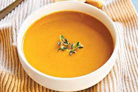

Pumpkin Soup
Description
Keep warm with a bowl of soup
Ingredients
- 1 whole butternut Pumpkin
- 2 sprigs of spring onion
- 2 potatoes
- spices
- Veg stock
Steps
- Preheat oven
- Cut pumpkin into wedges and add to oven
- Dice spring onion
- add to pot and cook with oil
- add spices and stock
- add potatos to pot and boil
- add pumpkin to pot and blend to desired consistency
